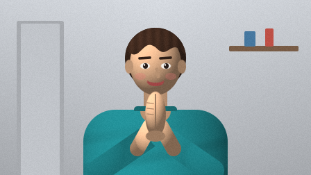
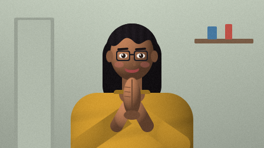
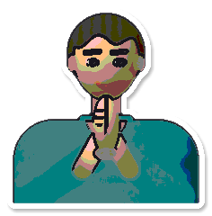
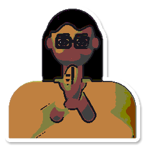
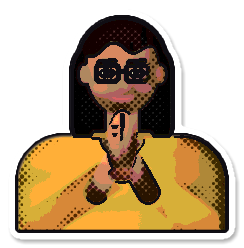

hwAI ไหว้กูซะ · sticker looks
ทุกสไตล์ที่ vision/worker/sticker.js ทำได้ วาดจากคนสังเคราะห์ (รูปทรงล้วน ไม่มีรูปถ่ายจริง) แต่ละใบโชว์บนพื้นมืด (HUD) และพื้นสว่าง แถว 48px คือขนาดจริงในแถบสติ๊กเกอร์ของหน้าหลัก · ตั้งค่า: config.json → sticker_style หรือ select ในหน้าหลัก · ค่าเริ่มต้น photo


ไม่พบสติ๊กเกอร์จริงใน ~/.waikusa/stickers/ ตอนสร้างหน้านี้ · ไหว้ผ่านสักครั้งแล้วรัน node scripts/sticker-preview.mjs อีกรอบ จะมีแถวตัวอย่างจริงเพิ่ม (ผลเก็บใน ~/.waikusa/sticker-preview/ นอก repo)
photo รูปถ่าย
ของเดิม: ภาพจริง + ขอบขาว 6px + เงา
cartoon การ์ตูน
ของเดิม: เบลอ + posterize 5 ระดับ + เส้นหมึกตามขอบ


comic คอมิก
สีอุ่นอิ่มตัว, เงาเป็นเม็ด halftone, เส้นหมึกดำหนา + ขอบสติ๊กเกอร์ขาว

pixel พิกเซล
ย่อเหลือ ~64px, palette 13 สี + หมึก + ขาว, ขยายแบบ nearest, ขอบเข้ม 1 พิกเซล
neon นีออน
duotone มืด→แดง hud→ทอง blessed, scanline, ฐานดำ + หลอดนีออนแดงเรือง (สีส่งเป็นพารามิเตอร์)
kawaii คาวาอี้
พาสเทลนุ่ม, ขอบขาวมนใหญ่แบบไดคัท, ดาววิบวับตาม seed (waiId), หน้าสว่างขึ้นเมื่อรู้ตำแหน่งหน้า